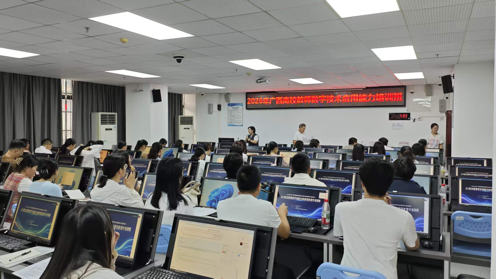
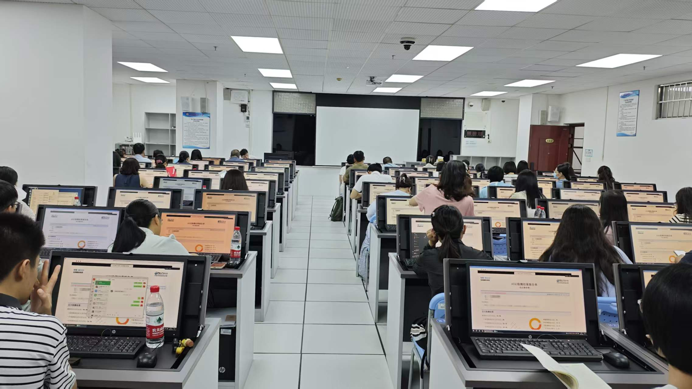
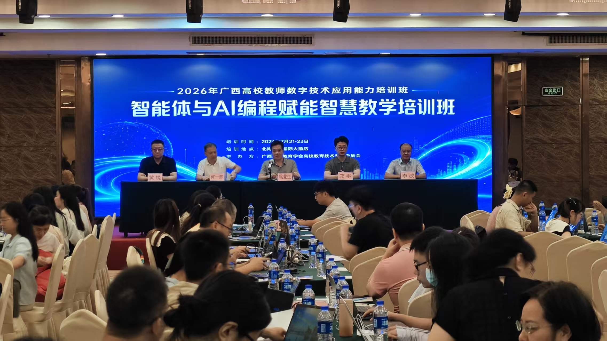

合作案例 –广西省高等教育学会（广西高校技术专业委员会）






连续两年合作，先后在南宁、北海两地开展6天AI专题培训，累计参训教师超350人
依托行业协会平台，培训
覆盖区域内多所高校教师
课程围绕"AI驱动智慧教学创新与科研效能提升""智能体与AI编程赋能智慧教学"等主题递进展开
理论讲授与上机实操相结合，帮助区域高校教师系统性提升数智教学与科研创新能力
形成"协会搭台、多校受益"的
区域培训范式


